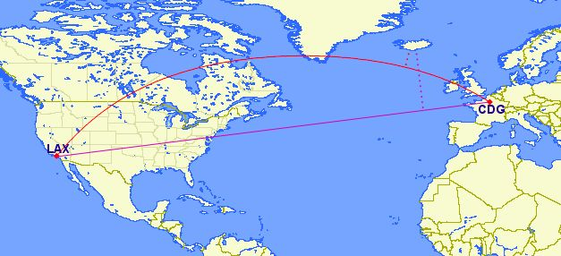

Spatial SQL
In this section you'll have the chance to test some of the most common PostGIS SQL procedures.
Contents
- Spatial SQL
Set up
For this exercise, we will use CARTO as a convenient way to interact with PostGIS, which will require no installation or configuration by you. You won't even need an account; we're using public demo datasets. However, you could always download the datasets and import them to your own CARTO account before starting.
These are the datasets that you will need to complete the exercises. You can download them from the links below and import them to your CARTO account.
- ne_10m_populated_places_simple: Populated places in the world.
- ne_110m_admin_0_countries: Countries
- railroad_data: Raiload accidents in the US
- barcelona_building_footprints: City blocks in Barcelona
- lineas_madrid: Madrid's Metro lines
- listings_madrid: AirBnB data for Madrid
As a client for this workshop, we will use a web application that can interact with CARTO: Franchise.
From the side menu, navigate to 'CARTO', then use the following parameters to connect:
- Host name:
carto.com - User name:
carto-workshops(or your own username) - API key: you can leave this empty

Once connected, you can run SELECT queries against any public dataset from that account.
Some tables you have available to you from this account are:
ne_10m_populated_places_simple: Natural Earth populated placesne_110m_admin_0_countries: Natural Earth country boundariesrailroad_data: Railroad accidents in the USAbarcelona_building_footprints: Barcelona blockslineas_madrid: Madrid metro lineslistings_madrid: Madrid Airbnb listings
Try entering a simple query like the one below. To run the query, type Control+Enter on PCs, Command+Enter/Cmd+Return on macs, or press the green play button in the bottom right corner of the SQL panel.
select *
from listings_madrid
where bathrooms >= 3
After applying a query, you should see the results in the map. If it becomes unresponsive, normally just refreshing the page will make it work again.
PostGIS concepts: geometry vs. geography
-
Geometryuses a cartesian plane to measure and store features (CRS units):The basis for the PostGIS
geometrytype is a plane. The shortest path between two points on the plane is a straight line. That means calculations on geometries (areas, distances, lengths, intersections, etc) can be calculated using cartesian mathematics and straight line vectors. -
Geographyuses a sphere to measure and store features (Meters):The basis for the PostGIS
geographytype is a sphere. The shortest path between two points on the sphere is a great circle arc. That means that calculations on geographies (areas, distances, lengths, intersections, etc) must be calculated on the sphere, using more complicated mathematics. For more accurate measurements, the calculations must take the actual spheroidal shape of the world into account, and the mathematics becomes very complicated indeed.
More about the geography type can be found here and here.


Source: Boundless Postgis intro
the_geom vs. the_geom_webmercator
the_geomEPSG:4326. Unprojected coordinates in decimal degrees (Lon/Lat). WGS84 Spheroid.the_geom_webmercatorEPSG:3857. UTM projected coordinates in meters. This is a conventional Coordinate Reference System, widely accepted as a 'de facto' standard in webmapping.
In CARTO, the_geom_webmercator column is the one we see represented in the map. Know more about projections:
SQL that applies to all geometries
The following queries will work on all geometries: point, line, and polygon.
Transforming geometries into a different projection
World Robinson
SELECT
cartodb_id,
ST_Transform(the_geom, 54030) AS the_geom_webmercator
FROM
ne_50m_land
About working with different projections in CARTO and ST_Transform.
This application displays several popular map projections and gives some information on each.
Translating Geometries
SELECT
cartodb_id,
ST_Transform(ST_Translate(the_geom,5.0,7.4), 3857) as the_geom_webmercator
FROM
ne_50m_land
WHERE
ST_Intersects(
the_geom,
ST_MakeEnvelope(-18.748169,27.571591,-13.342896,29.463514,4326)
)
Buffer (ST_Buffer)
Simple Buffer
ST_Buffer uses the input geometry's unit of measure, which in the case of our the_geom is decimal degrees. In order to use meters as our buffer unit, we must cast our geometry to a geography, then back to a geometry once we have our buffer. Alternatively, if you just want to visualize you can simply use the_geom_webmercator, as it's unit of measure is already meters.
About ST_Buffer.
SELECT
ST_Transform(
ST_Buffer(
the_geom::geography,
10000*5
)::geometry,
3857) As the_geom_webmercator,
1 as cartodb_id
FROM
ne_10m_populated_places_simple
WHERE
adm0name ILIKE 'spain'
Dissolve Buffers
SELECT
row_number() over() as cartodb_id,
ST_UnaryUnion(grp) as the_geom,
st_transform(
ST_UnaryUnion(grp)
,3857
) as the_geom_webmercator,
ST_NumGeometries(grp) as num_geoms
FROM
(SELECT
UNNEST(
ST_ClusterWithin(
(
ST_BUFFER(
(the_geom::geography)
,10000*5
)::geometry
)
,0.0001)
) AS grp
FROM ne_10m_populated_places_simple
WHERE adm0name ILIKE 'spain') sq
SQL for Points
Know wether a geometry is within the given range from another geometry:
SELECT a.*
FROM ne_10m_populated_places_simple a,
ne_10m_populated_places_simple b
WHERE a.cartodb_id != b.cartodb_id
AND ST_DWithin(
a.the_geom_webmercator,
b.the_geom_webmercator,
150000)
AND a.adm0name = 'Spain'
AND b.adm0name = 'Spain'
In this case, we are using the_geom_webmercator to avoid casting to geography type. Calculations made with geometry type takes the CRS units.
Keep in mind that CRS units in webmercator are not meters, and they depend directly on the latitude.
About ST_DWithin.
Making lines
Simple lines
WITH
b as (SELECT * FROM ne_10m_populated_places_simple WHERE name ilike 'barcelona' and adm0name ilike 'spain'),
m as (SELECT * FROM ne_10m_populated_places_simple WHERE name ilike 'madrid')
SELECT
ST_Transform(ST_MakeLine(b.the_geom, m.the_geom),3857) as the_geom_webmercator,
b.cartodb_id
FROM
b, m
Multiple lines
WITH
spain as (SELECT * FROM ne_10m_populated_places_simple WHERE adm0name ILIKE 'spain'),
madrid as (SELECT * FROM spain WHERE name ILIKE 'Madrid')
SELECT
ST_Transform(ST_MakeLine(m.the_geom, s.the_geom),3857) as the_geom_webmercator,
s.cartodb_id
FROM
spain s, madrid m
WHERE
s.cartodb_id <> m.cartodb_id
Sequential lines
SELECT
ST_MakeLine(the_geom_webmercator ORDER BY ST_X(the_geom), ST_Y(the_geom) ASC) as the_geom_webmercator,
min(cartodb_id) as cartodb_id
FROM
ne_10m_populated_places_simple
WHERE
adm0name ILIKE 'spain'
Great Circles (curved lines)
SELECT ST_Transform(
ST_Segmentize(
ST_Makeline(
a.the_geom,
b.the_geom
)::geography,
100000
)::geometry,
3857
) as the_geom_webmercator
FROM (
SELECT *
FROM ne_10m_populated_places_simple
WHERE name ILIKE 'madrid'
) as a,
(
SELECT *
FROM ne_10m_populated_places_simple
WHERE name ILIKE 'new york'
) as b
About Great Circles.
SQL for Polygons
Get the number of points inside a polygon
Using GROUP BY:
SELECT e.cartodb_id,
e.admin,
e.the_geom_webmercator,
count(*) AS pp_count,
sum(p.pop_max) as sum_pop
FROM ne_adm0_europe e
JOIN ne_10m_populated_places_simple p
ON ST_Intersects(p.the_geom, e.the_geom)
GROUP BY e.cartodb_id
Using LATERAL:
SELECT a.cartodb_id,
a.admin AS name,
a.the_geom_webmercator,
counts.number_cities AS pp_count,
counts.sum_pop
FROM ne_adm0_europe a
CROSS JOIN LATERAL
( SELECT count(*) as number_cities,
sum(pop_max) as sum_pop
FROM ne_10m_populated_places_simple b
WHERE ST_Intersects(a.the_geom, b.the_geom)
) AS counts
About ST_Intersects and Lateral JOIN
Note: You know about the EXPLAIN ANALYZE function? use it to take a look on how both queries are pretty similar in terms of performance.
Get the difference between two geometries:
SELECT a.cartodb_id,
ST_Difference(
a.the_geom_webmercator,
b.the_geom_webmercator
) AS the_geom_webmercator
FROM ne_50m_land a,
ne_adm0_europe b
WHERE b.adm0_a3 like 'ESP'
About ST_Difference.
Negative buffer
SELECT
cartodb_id,
ST_Transform(
ST_Buffer(
the_geom::geography,
-30000
)::geometry,
3857) As the_geom_webmercator
FROM
world_borders
WHERE
name ilike 'spain'
Spatial Joins
with metro_lines as (
SELECT
row_number() over() as cartodb_id,
ST_Buffer(
the_geom::geography,
100
)::geometry as the_geom,
ST_Transform(
ST_Buffer(
the_geom::geography,
100
)::geometry,
3857) As the_geom_webmercator
FROM lineas_madrid
)
select x.*,
y.cartodb_id as joined
from listings_madrid x
left join metro_lines y
on st_intersects(x.the_geom, y.the_geom)
In the above example, you can see where the points joined on the buffer of the metro lines, and where they didn't based on if the cartodb_id for the lines existed in the points dataset.
SQL for CARTO
CDB_LatLng()
cdb_latlng() is a shortcut to the function ST_SetSRID(ST_Point(),srid), with the default srid set as 4326, the srid of the_geom. One notable difference is that ST_Point() takes coordinate pairs in the order of (longitude, latitude), whereas cdb_latlng() takes coordinate pairs in the order of (latitude, longitude).
SELECT
1 as cartodb_id,
CDB_LatLng(0,0) as the_geom,
ST_Transform(CDB_LatLng(0, 0), 3857) as the_geom_webmercator
/* ST_SetSRID(ST_MakePoint(0, 0), 4326) */
Grids
Hexagon Grids
WITH grid as (
SELECT
row_number() over () as cartodb_id,
CDB_HexagonGrid(
ST_Buffer(the_geom_webmercator, 1000000),
10000
) AS the_geom_webmercator
FROM
world_borders
WHERE
name ILIKE 'spain')
SELECT
grid.the_geom_webmercator,
grid.cartodb_id
FROM
grid, world_borders a
WHERE
ST_Intersects(grid.the_geom_webmercator, a.the_geom_webmercator)
AND
name ILIKE 'spain'
About CDB_HexagonGrid
Rectangular Grids
WITH grid as (
SELECT
row_number() over () as cartodb_id,
CDB_RectangleGrid(
ST_Buffer(the_geom_webmercator, 1000000),
25000,
25000
) AS the_geom_webmercator
FROM
world_borders
WHERE
name ILIKE 'spain')
SELECT
grid.the_geom_webmercator,
grid.cartodb_id
FROM
grid, world_borders a
WHERE
ST_Intersects(grid.the_geom_webmercator, a.the_geom_webmercator)
AND
name ILIKE 'spain'
About CDB_RectangleGrid
You can read more about CARTO custom spatial queries here.